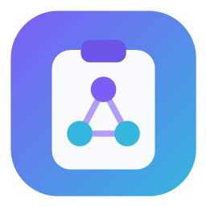

Un solo mouse, tutti i tuoi schermi. Il cursore attraversa da un PC all'altro, le finestre si teletrasportano — fin sul telefono — e la clipboard è condivisa. Sulla rete locale, sicura e senza cloud.
I tuoi PC — e il telefono — diventano un'unica scrivania in rete locale.
Porti il cursore oltre il bordo dello schermo e prosegui sul PC accanto — con clic, rotella e tastiera. Una fila di computer guidata da uno solo, come un KVM software: nessun cavo, nessun relay.
Sposti un'intera finestra da un PC a un altro schermo — o su telefono e tablet, che ne diventano il palco: la vedi e la comandi da lì, con tocco e tastiera. Perfetto per tenere d'occhio qualcosa mentre lavori altrove.
L'app riconosce la rete in automatico dal router e ricorda per ciascuna la propria disposizione degli schermi. Cambi sede e ritrovi la fila giusta, senza toccare nulla.
Come la clipboard di Windows, ma condivisa tra tutti i tuoi dispositivi.
Tutto quello che copi passa da un PC all'altro, incluse cartelle intere.
Premi Win+Alt+V e ritrovi gli ultimi elementi copiati su qualsiasi tuo device — con i preferiti fissati in cima.
I file grandi non intasano la rete: partono solo quando incolli davvero.
I PC si trovano da soli sulla LAN e formano una mesh; accoppiamenti e revoche si propagano a tutti. Nessun cloud, nessun account.
Accoppiamento con codice a 6 cifre, traffico cifrato, niente password condivise.
Le nuove versioni arrivano da sole, firmate crittograficamente, con la tua conferma.
Ogni PC ha una sua identità crittografica. Ti accoppi una volta confermando un codice, e revochi quando vuoi.
Su ciascun PC:
Avvia NetClipboard-Setup.exe. Nessun admin richiesto: si installa per l'utente.
Tray → Dispositivi e pairing → scegli l'altro PC → conferma il codice a 6 cifre identico sui due schermi.
Fatto. Copia su un PC, incolla sull'altro. Win+Alt+V apre la cronologia condivisa.
Gratis. Windows 10 e 11 (64-bit) · Android 10+.
L'app gira nella tray. Se i PC non si vedono, dal menu usa "Configura firewall" (una volta).